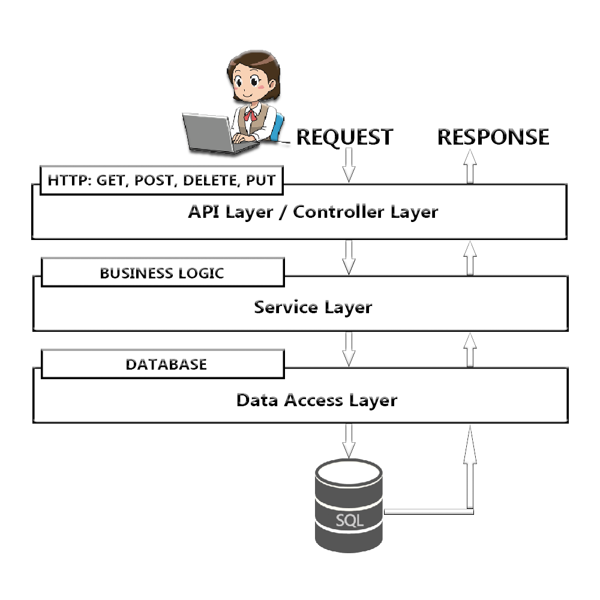

Java Web App with Spring Boot 2.1.5 - Embedded Tomcat - Maven package jar - JDK 1.8 - IntelliJ IDEA Ultimate 2019
Disclaimer:
The information in this guide is true and complete to the best of the author's knowledge. All recommendations are made without guarantee on the part of the author. By using this guide you understand that the author is not responsible to troubleshoot your application.
Target Audience:
This guide is intended to provide a how-to for beginner Software Developers who want to build a Java JDK 1.8 - Spring boot 2.1.5 - Thymeleaf template engine - JPA (Java Persistence API) - Maven package jar - web-app.
Note:
This is just a guide to help you learn how to create a Spring boot webapp, it does not guide you how to create any project example/ sample from start to finish.
Nice to have, before you start:
- IDE, I'm using IntelliJ IDEA Ultimate (paid) 2019 version, so all of the screenshots and modules, settings, etc are based off IntelliJ IDEA but you can Google search for similar options/functions/locations of libraries, etc in your choice of IDE. But IntelliJ IDEA is super-est IDE in my opinion with exposed experience with other IDEs.
- Java JDK 1.8 and Spring boot 2.5.1
- Basic knowledge of open source Tomcat application server
- Helpful if have basic knowledge with MVC (Model View Controller - Database DAO SQL Utility - UI - Controller/Servlets)
- Helpful if you know Maven apache
- Helpful if you know Postman REST client
What is & Why Spring Boot ?
- Spring is a template/framework that lets you write Enterprise Java applications
- Boot is bootstrap, Spring Boot is a tool that lets you bootstrap a stand-alone, production-grade, Spring based application from scratch that you can "just run". Stand-alone application means that what you have, you can just run and have it started a web server so you don't have to find one and configure it, typically Spring Boot's default server is Tomcat localhost runs on port 8080 but you can change it in application.properties.
- No WAR file, we are going to create a Java jar file so that you can deploy to any server
- If you are familiar with Spring framework, you will understand the pain of having to do a lot of stuff to the point where you have a lot of configurations to do in POM.xml, but Spring Boot will take care of all of these for you
- https://start.spring.io/ - you can bootstrap your application from this website and Spring uses Eclipse > https://spring.io/tools3/eclipse, I create my Spring Boot 2.5.1 Enterprise application from IntelliJ IDEA Ultimate version 2019
Let's talk about Spring a little
It has the origin from the concept of dependency injection, but it's a whole lot more, it's a huge Java framework that builds Enterprise Java applications and it handles programming and configurations for you and let you focus on solving business services and creating MVC layers/POJO classes and then use annotations. Spring will apply a whole lot of things to your annotated classes and manage lifecycle of those classes. Spring also has infrastructure supports, for example, connecting to IBM database, MongoDB database, etc, and you can leverage some of the infrastructure when you're building your applications.
Spring is so awesome, but it also has some minor problems such as:
- It's a huge framework that over the years, Spring team tried to address all different ways to provide solutions to businesses' common concerns when building enterprise applications certain ways the business wants
- Spring has a lot of setup/configuration steps as it needs to do a lot of configurations (adding properties, dependencies, plugins, etc) for it to do what you want it to do. Since it has a lot of capabilities and flexibilities, there is no starting point/no guide/no pathway to show you how to ideally build a particular enterprise application, you are left to figure it out on your own.
Annotations
This site contains a list of annotations which explains really well of each annotation's usage in Spring framework => Spring Framework AnnotationsUhh, and I want to point out Controller annotations
@Controller vs @RestController
- @Controller: the methods that use this annotation will instruct the framework to return a model and a view back to the client so the client will get a HTTP page that has been processed by Spring
- @RestController: @Controller + @ResponseBody
@ResponseBody means that the object returned from a method that uses this annotation is the actual body of the HTTP response, represented as XML or JSON

pom.xml
- POM stands for Project Object Model. The build directory is target, source directory is src/main/java, test source directory is src/test/java, etc. Maven is your dependencies management tool and Maven will look for pom.xml to know these are all the things your app needs in order for your app to run. Then Maven will go to the repository which has the list of all dependencies that you would ever need and resolves all the jars that need to be added/downloaded to class path.
- Spring Boot's philosophy is convention over configurations, for 80% of used cases, Spring Boot provides default configurations and there are other configurations of our own that we have to add, too. Spring team has created a project called spring boot starter parent and puts all the default opinionated Maven configurations into it and the child project (which is Hotel Booking) will inherits the parent project's configurations.
Let's take a look at Spring Boot project's structure...
src/main/resources
-
static directory
contains all of web resources for web applications -
template directory
i.e. Thymeleaf, mustache.js, EJS
Thymeleaf is a Java library. It is an XML/XHTML/HTML5 template engine that is able to apply a set of transformations to template files in order to display data and/or text produced by your applications. - application.properties
You can define different environments here i.e. you could have demo, test, production environments with different values for the actual properties
specify your database:
spring.datasource.url=jdbc:hsqldb:file:./hotelbooking.db
to change to H2 database, you can simply just change hsqldb to h2 like this
spring.datasource.url=jdbc:h2:file:./hotelbooking.db
src/main/java/com.herokuapp.hotelbooking
-
model directory
In our example, HotelBooking class with @Entity annotation -
api directory
-
service directory
-
dao directory
You can start with an implementation and if you want to switch to a different database, you simply only need to change 1 line of code, which is in application.properties
Let's begin...
-
- Create new Java project
- Choose Spring Initalizr
- Change Project SDK to 8 (which is Java JDK 1.8)
- Click Next

-
- Type group name
- Type Artifact name (must be all lowercase)
- Packaging: Jar (as we want to run the jar file instead of uploading WAR file to Tomcat server)
- Java Version: 8 (when I picked Java JDK 12, I got an error
message "unsupported class file version 56 for current class file version
up to 52" --PS: I forgot to change v.12 to v.8 before I screenshot the figure
below. Sorry :) You can reference the list HERE
- Java 8 uses major version 52
- Java 9 uses major version 53
- Java 10 uses major version 54
- Java 11 uses major version 55
- Java 12 uses major version 56
- Change Name
- You can add Description for your project, I just keep it as default as a DEMO
- Click Next

-
- Click on Web
- Check-box Web (Servlet web application with Spring MVC (model view controller) and Tomcat
- Click Next

-
- Click on Template Engines
- Choose Thymeleaf
- Click Next

-
- Click on SQL
- Check-box JPA (Java Persistence API)
- Check-box HSQLDB (Relational Database Management System written in Java. It has a JDBC driver and supports a large subset of SQL-92, 2008, 2011 standards. It offers a fast, small database engine which offers both in-memory and disk-based tables. Both embedded and server modes are available - Per Wikipedia
- Click Next

-
- Click on Ops
- Click on Actuator (Production ready features to help you monitor and manage your application)
- Click Next

-
Type your project name, desired location and click Finish

-
Wait for Maven to resolve all dependencies


-
Click on pom.xml, as you can see it already configured all dependencies for you


-
Expand src > main > java > your group name package > you will see Spring Boot
already created a Application class with @SpringBootApplication
annotation

-
Right-click on your com.packagename and choose New > Java Class
Type in your ProjectNameController
Open ProjectNameController class, add @RestController as shown in the figure below

-
Add following lines as shown in figure below and click green triangle icon next to
your ProjectNameApplication on the menu bar to run your application (step 2 in the
figure)

-
Notice in Run dialog, you will see Tomcat started on port:8080

-
Go to your browser and type localhost:8080/hello

-
Now let generate a jar file, so you can open your project from command windows
- Click on View
- Hover over Tool Windows to expand side menu
- Click on Maven

-
Maven dialog opens, expand Lifecycle, and double-clicks on package

-
After BUILD SUCCESS. Right-click on your project name, choose Show in Explorer

-
Notice there is a new folder named target, double-clicks on target to open it
Notice there is a jar java jar file that Maven package command just generated for you projectname-0.0.1-SNAPSHOT.jar
This is your deployable artifact, so you don't need Maven or Tomcat

-
On command window, or here I'm using Terminal from IntelliJ IDEA, change
directory to target folder with cd target
Then you can open jar file by typing java jar ./projectname-0.0.1-SNAPSHOT.jar and hit enter

-
Wait for Spring Boot to run

-
Open your browser again and type in localhost:8080/hello and you should get the
same result
Or if you already have your browser opened, just click on refresh icon on Chrome